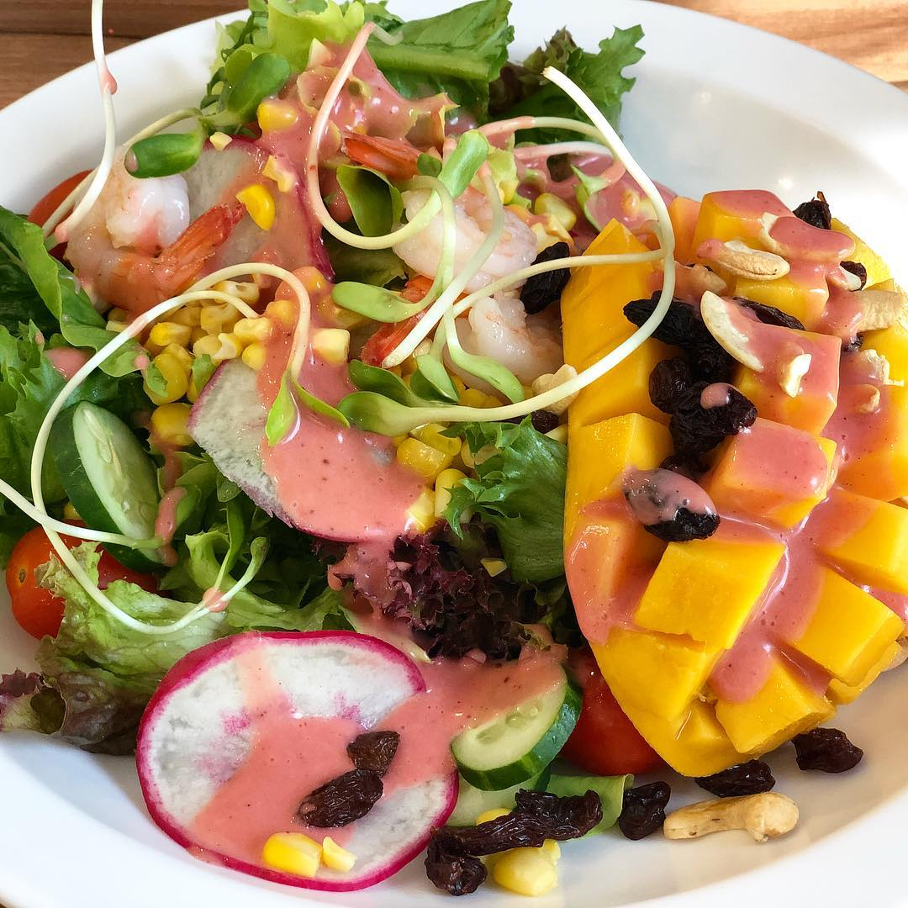
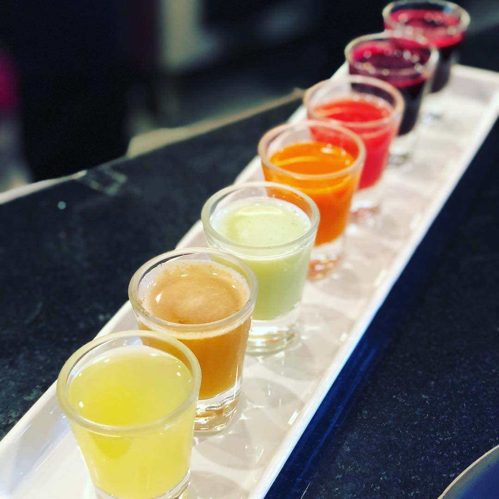
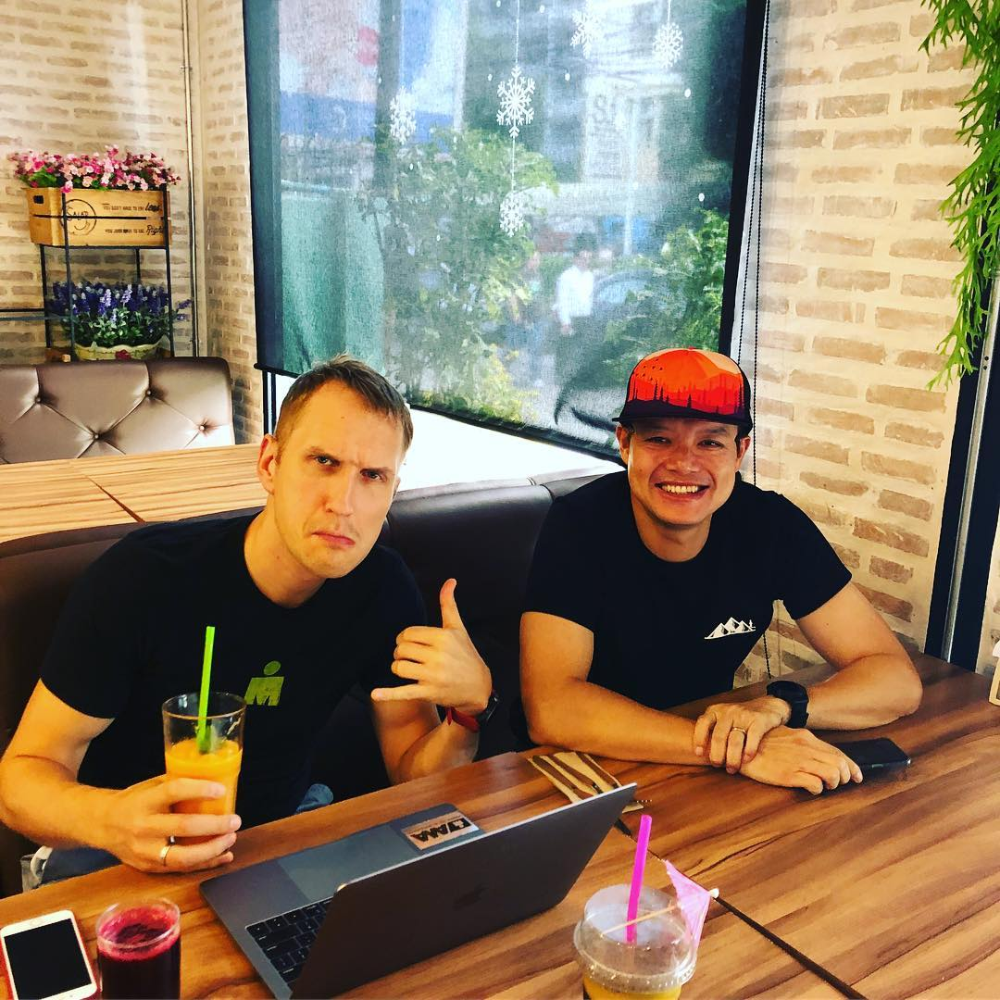
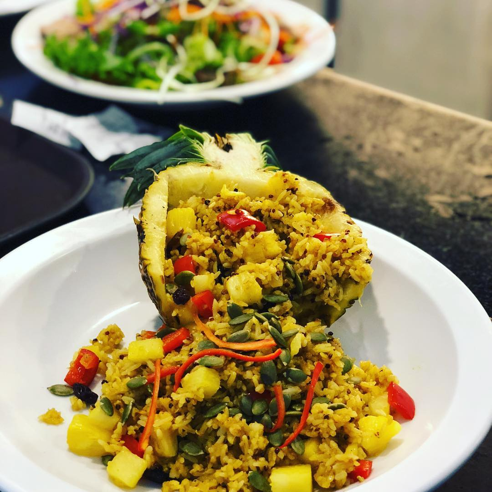
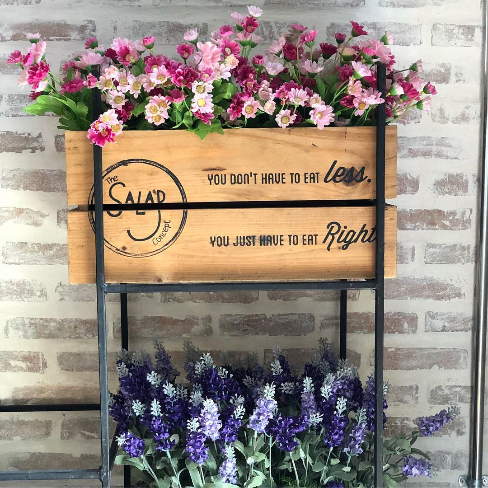

So great to be back to Chiang Mai - cultural capital of Thailand!!! This time I have no plans to visit gorgeous temples but support these 2 crazy fellas who in less than 24 hr will start #100miles race in the mountainous jungles of #Chiangmai 😬 #pongyaengtrail race, here we come! If you plan to visit Chiang Mai - check out @thesaladconcept, they have amazing salads, pastas, pineapple rice and various fruit juices! Arseny and Eddy’s #carboloading was very delicious! 👌🏼😋 I was a #happykid eating fantastic mango salad with prawns and strawberry sauce 👍🏼 — #trailrunning #trailrunner #ultrarunning #ultrarunner #marathon #chiangmaitrailrunning #trailwayrun #thesaladconcept
2018-11-08 21:39:09
Back to main page